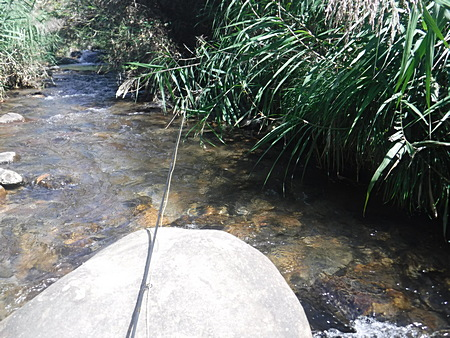
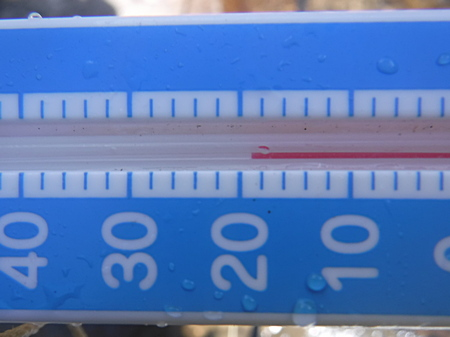
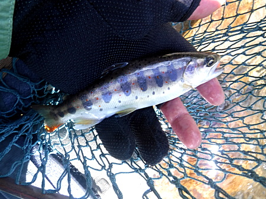
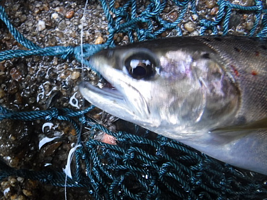

釣行日誌 故郷編
2024/09/29 柳の下の、２尾目は.....
雨降らずで、ド渇水の、真っ昼間に出かけて釣るのが、ウデの見せ所.....などと大口を叩きつつ、先週爆釣して、味を占めた川の同じ区間から入渓。懲りない人物。
いやぁ、渋い渋い。魚は居るのだが、一度フライに出るともう姿を消してしまう。喰いも浅い。

草むらの下、奥深くに、居ることは居るのだが、とても渋い。

水温はまずまず、許容範囲。
ナイロンの５号くらい強そうなクモの巣と格闘しながらフライを振り込み続ける。
こりゃボウズかと覚悟したが、何とか小学生サイズ３匹を釣ってほっとして帰宅。

小学生サイズ
唯一の収穫は、本でしか読んだことの無かった「ボウ・アンド・アローキャスト」を、この間 YouTube で見て実践し、覚えたこと。リーダーを短めにしてフックをつまみ、ゴムパチンコの要領で弾いて毛鉤を打ち込む。気を付けないと手に毛鉤が刺さる。(笑)

オレンジ色のエアロドライウィングをポストにした
パラシュート・ドライフライに出た１尾
パラシュート・ドライフライに出た１尾
あと、この方法でニンフを投射する場合には、ロッドとリーダーとが垂直になった状態で弾かないと、重みのあるニンフがカーブして、変なところに着水してしまう。
まだまだシロートだなぁと痛感した晩夏の里川。
2024/01/31
釣行日誌 故郷編 目次へ
サイトマップ
ホームへ
お問い合わせ